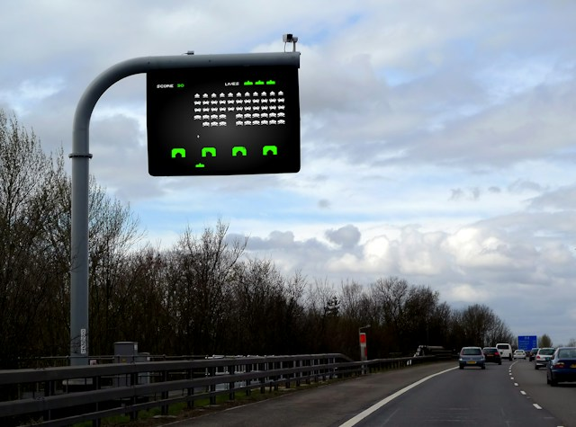

Eng. de Computação (2026/2)
Ementa
Teoria da amostragem e aquisição de dados. Análise de sinais e sistemas discretos nos domínios do tempo e da frequência. Transformada discreta de Fourier (DFT/FFT). Transformada Z. Análise da transformada Z aplicada a filtros. Filtros digitais. Análise no plano Z de sistemas de controle discreto. Mapeamento entre planos S e Z. Análise de estabilidade e regime transitório. Controladores digitais. Projeto com lugar das raízes e resposta em frequência. Implementação de algoritmos de processamento digital de sinais e controle digital em microcontroladores de uso geral.
Seguem conteúdo e atividades previstas.
Parte I: Embasamento Teórico
| Encontro | Conteúdo Previsto |
|---|---|
| 1) 27/07 | Apresentação, ementa e critérios de avaliação. Introdução ao Controle Digital e PDS: revisão de sinais contínuos e discretos. Teoria da Amostragem: Teorema de Nyquist-Shannon, Aliasing e Conversores A/D e D/A. Material Adicional (em inglês). |
| 2) 03/08 | Análise de Sinais e Sistemas Discretos no Domínio do Tempo. Equações de Diferenças. Introdução à Transformada Z, Transformadas de alguns sinais, Propriedades da Transformada Z, Métodos de Transformada Inversa de Z. Exemplos/exercícios. Parte 1 | Parte 2 | Parte 3. |
| 3) 10/08 | Transformada-Z: Região de Convergência (ROC). Mapeamento do plano-s para o plano-z. Resumo Transformada Z. |
Parte II: PDS (Processamento Digital de Sinais)
| Encontro | Conteúdo Previsto |
|---|---|
| 4) 17/08 | Introdução à Filtros Digitais; 1. Filtro de Média Móvel; 2. Filtro Exponencial de 1a-ordem; Transformação bilinear (do plano-s p/plano-z): Método de Tustin; 3. Filtros Butterworth digitais; |
| 5) 24/08 | Modelagem de Sistemas Dinâmicos Discretos e Resposta Transitória no Plano Z: Função Transferência no plano-z Estabilidade de Sistemas Discretos Pólos e Zeros no plano-z e impacto na resposta frequencial. ⇐ Previsão. |
| 6) 31/08 | Série de Fourier (introdução). Exemplos com Síntese da Onda Quadrada: - Versão 1; - Versão 2: com animação ao final) Algoritmo FFT. Uso do algoritmo FFT para levantamento Espectro de um Sinal (Análise de Espectro) − exemplos. |
| 07/09 | Sem aula (Feriado Nacional) |
| 7) 14/09 | 👉 Atividades de Laboratório 2026/2 Atividades Previstas: ∎ TDE 1: Gerador de Onda Senoidal, 10 KHz, usando ESP32 e ISR. ∎ TDE 2: Filtro de Média Móvel (4, 10 passos) sobre sinal de LDR ( |
| 8) 21/09 | Atividade Prática: Finalizando Gerador Onda Senoidal + Filtro de Médio Móvel sobre sinal de LDR. |
Parte III: Controle Digital
| Encontro | Conteúdo Previsto |
|---|---|
| 09) 29/09 | Ações Básicas de Controle (Rápida Revisão) Introdução à Modelagem (breve) Exemplo de Levantamento de Modelo de Sistema Térmico |
| 10) 05/10 | Paralelos entre plano-s vs plano-z (inclui eq. de diferença do controlador digital). Modelagem do Sustentador de Ordem Zero ☞ Determinação de BoG(z) 1. Projeto de Controlador Proporcional |
| 11) 19/10 | Teoria da Precisão (ou do Erro) (Integrações Numéricas) 2. Controlador P e I “puro” 3. Controlador PI (e Lag) |
| 12) 26/10 | Teoria de Controladores com Ação Derivativa (base teórica) Teste de Controladores com Ação Derivativa (Matlab/Simulink) Resumo da teoria (ação derivativa) 4. Controlador PD | Outro exemplo |
| 13) 09/11 | Controlador PID: Base teórica (PID) Sintonia (prática) de PIDs usando Ziegler Nichols |
| 14) 16/11 | Obtendo Espectro de um Sinal usando algoritmo FFT ( Teoria sobre fft ) — função disponibilizada: espectro.m Filtragem de ruído de 50 Hz em sinal de ECG, usando filtro Notch digital; Exemplo de Filtro Passa-baixas Digital Butteworth usando transformação bilinear (método de Tustin); ∎ TDE 3: Simulando filtro Notch para eliminar “apito” num sinal musical. Sinal com ruído: snap_with_noise.wav ⇠ Save Linked File As.. Diary da aula de 16/11/2026 (aula_16112026.txt + (arquivo zip com .txt, .png e .wav’s: aula_16112026.zip - 8,6 MB). |
| 15) 23/11 | Atividades Prátricas: ∎ Implementação de PID usando ESP32. ∎ TDE 2: Controle de luminosidade baseado em LDR e Filtro de Média Móvel; ∎ TDE 4: Sistema de Aquecimento para Xícara de Café. Incluindo possível PI/PID com sintonia prática; Inspiração (ISR à ∎ Controle PID de posição angular de motor CC (uso de kit Feedback MS-150). |
| 16) 30/11 | Avaliação Final de Projetos (TDE’s) (finalização/apresentação dos últimos projetos) |
| 17) 07/12 | Prova Final (Entrega últimos relatórios de projetos) |
Último mês:
Dezembro 2026Do Se Te Qu Qu Se Sá1 2 3 4 56 7 8 9 10 11 12 <-- Últimas aulas13 14 15 16 17 18 19 <-- EXAMES20 21 22 23 24 25 2627 28 29 30 31
Datas finais:
21/11 (sábado) = Recesso escolar 08/12 (3a-feira) = Feriado Municipal Passo Fundo 09/12 (4a-feira) = Período de matrícula para cursos graduação 14/12 (2a-feira) ~.19/12 (sábado) = Período de EXAMES disciplinas diurno e noturno, cursos regime regular
Previsão:
Parte Teórica (50%):
Parte Prática (50%): Relatórios e Apresentações dos projetos das partes práticas.
Previsto:
MATLAB/Simulink para análise, simulação e projeto de sistemas de controle digital e filtros digitais. Opcionalmente uso do Octave on-line: http://octave-online.net/.
Provável uso de Pyhon + Jupyter (projeto de filtros/controladores; simulações).
Bibliotecas Python: python-control, scipy.signal, lumpy, matplotlib, pyserial, jupyter/notebook. (Instalação recomendada usando Miniconda) Para baixar o Python: https://wiki.python.org/moin/BeginnersGuide/Download; Para instalar o Jupyter ("Python interativo"): https://jupyter.org/install.html ou instale: Miniconda: https://docs.anaconda.com/free/miniconda/index.html (menor) Anaconda: https://www.anaconda.com/download (pode exigir 4.8 Gbytes - mas se você pretende com IA... 😄 ).
Uso de ambiente de desenvolvimento integrado (IDE) para microcontroladores, como o Arduino IDE 2.x (uso intensivo do Serial Plotter nativo) e VSCode com extensão PlatformIO (programação de sistemas microcontroladosO, para programação de microcontroladores em C/C++.
[T. Misty Light macOS]